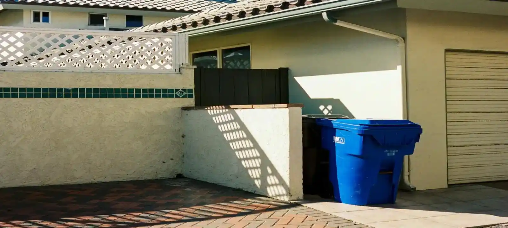
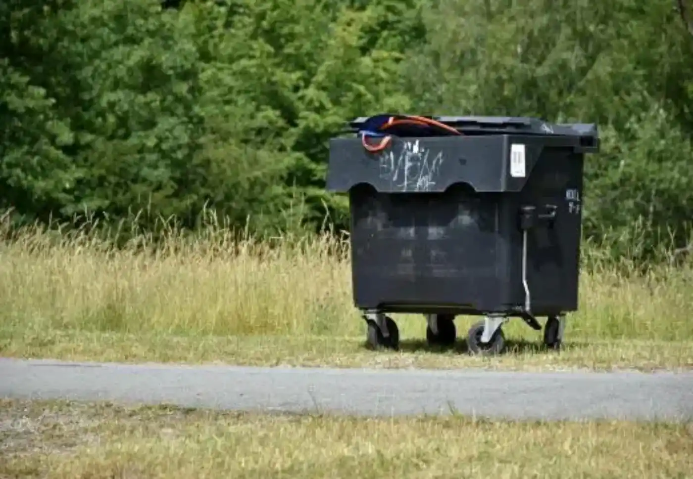

Skip Bin Hire Services Across Townsville QLD
Household Skip Bins
Household skip bins are commonly used for garage cleanouts, moving house, furniture disposal, deceased estate cleanups, and general rubbish removal. Many homeowners searching for cheap skip bin hire Townsville use these bins for practical everyday waste removal projects around residential properties.
Green Waste Skip Bins
Green waste skip bins are suitable for tree branches, grass, leaves, garden cleanups, landscaping work, and outdoor property maintenance. Separating green waste can also help reduce disposal costs compared to mixed waste skip bins.
Renovation & Construction Skip Bins
Renovation and construction skip bins are designed for concrete, timber, bricks, plasterboard, demolition debris, and mixed building materials. These skip bins help keep worksites cleaner, safer, and easier to manage during renovation and construction projects.
Commercial & Industrial Skip Bins
Commercial skip bins are often used by retail stores, warehouses, offices, workshops, and industrial sites generating ongoing waste. We provide flexible skip bin hire Townsville solutions for businesses needing practical waste management support.
Property & Rental Cleanup Skip Bins
Property cleanup skip bins are commonly used for rental property cleanouts, end-of-lease rubbish removal, deceased estates, and pre-sale property preparation. These projects often involve mixed household waste, furniture, outdoor rubbish, and unwanted items that need fast removal.
Skip Bin Sizes Available in Townsville
We provide 2m³, 3m³, 4m³, 5m³, 6m³, 8m³, 10m³, and 12m³ skip bins across Townsville QLD for different project sizes and waste volumes. Smaller bins are suitable for light household waste and garden cleanups, while larger bins are better for renovations, commercial waste, and construction debris. Choosing the correct size helps avoid overfilling, unnecessary costs, and additional collections.
When You May Need
Skip bins are commonly hired during renovations, landscaping work, moving house, office cleanups, construction projects, tenant cleanouts, and large household decluttering jobs. Waste can quickly build up during these projects, making rubbish removal difficult to manage without a properly sized skip bin on site.
What Affects Skip Bin Hire Townsville Prices
Skip bin hire Townsville prices usually depend on the skip bin size, waste type, hire duration, delivery access, and disposal requirements. Green waste is often cheaper to dispose of than mixed waste, concrete, or construction materials. Customers searching for cheapest skip bin hire Townsville options can often reduce costs by choosing the correct waste category and bin size before booking.
Why 1000+ Customers Choose Us
Many customers are unsure which skip bin size is suitable for their project or how different waste types affect disposal costs. We help customers understand the available options and organise a practical solution based on the amount of waste, property access, and project type. Our goal is to make skip bin hire simpler, faster, and more cost-effective for residential and commercial customers across Townsville.

Frequently Asked Questions
How much are skip bin hire Townsville prices?
Skip bin hire Townsville prices usually depend on the bin size, waste type, hire period, and delivery location. Smaller green waste bins are generally cheaper, while mixed waste and construction bins may cost more due to disposal requirements.
Can I find cheap skip bin hire Townsville options?
Yes. Many customers reduce costs by choosing the correct bin size and separating waste types such as green waste and mixed rubbish. Smaller bins for light household waste are usually the most affordable option.
What size skip bin do I need for my project?
Smaller skip bins are suitable for household cleanups, garden waste, and small renovation jobs, while larger bins are better for construction debris, furniture removal, and commercial waste. The right size depends on the amount and type of rubbish being removed.
What happens if I choose the wrong skip bin size?
Choosing a bin that is too small can lead to overflow problems or additional hire costs. Our team helps estimate the correct size based on your project and waste volume.
Do you provide same-day skip bin delivery in Townsville?
In many cases, yes. Same-day or fast delivery may be available depending on bin availability and your location within Townsville.